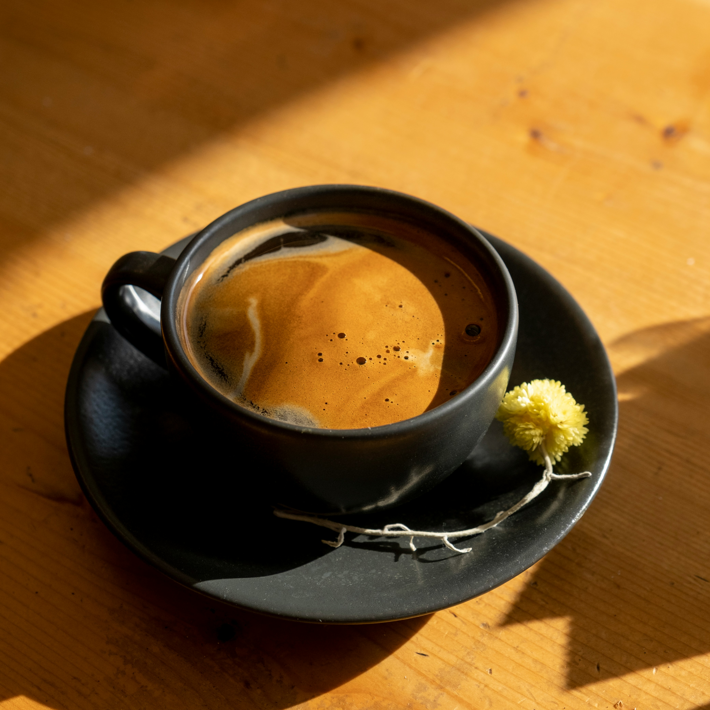

- Espresso
- Rich, intense, and pure. A double shot of our signature house blend.

- Americano
- Espresso shots topped with hot water for a smooth, full-bodied flavor..

- Cappuccino
- Equal parts espresso, steamed milk, and velvety foam. Dusted with cocoa powder.